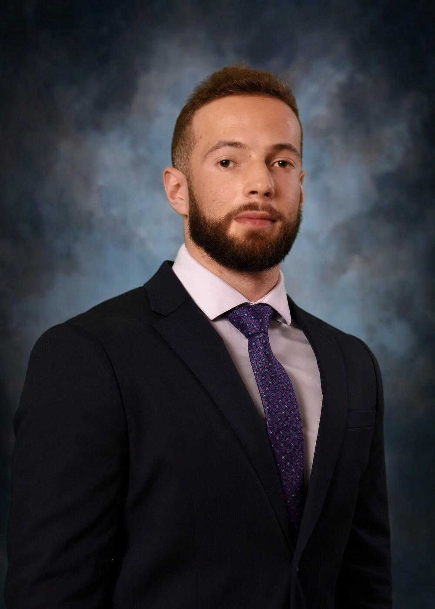

Piotr Witek
Hello everyone! My name is Piotr but everyone calls me Peter. I was born in Tarnow, Poland and came to Chicago with my family in 2008. I first started 6th grade at James Giles Elementary school. After that I went to Ridgewood High School in Norridge Illinois where I first encountered web design and coding through a Web Design course. After high school I enrolled at University of Illinois at Urbana-Champaign where I obtained a chemistry degree.
I am a huge sports fan! I have played soccer ever since I can remember. When I was growing up, we didn't have computers at my house so the only thing to do was either playing soccer or basketball. I love watching NBA and I try to go see as many live Bulls games as possible. Besides sports I enjoy taking photographs and playing around with them in Photoshop.
I am extremely grateful for being able to learn coding and programming through this DEV10 program. I believe that technology plays a crucial role in today's society, and I would like to be a part of this industry in the future.